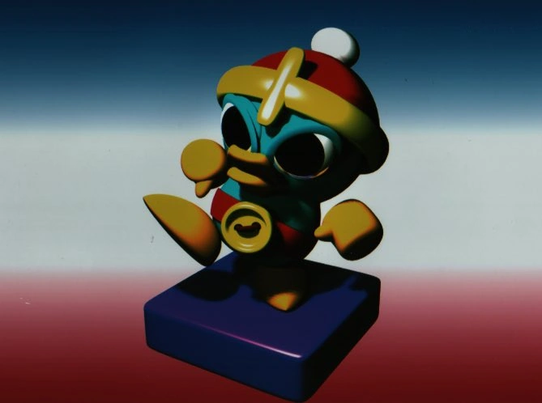
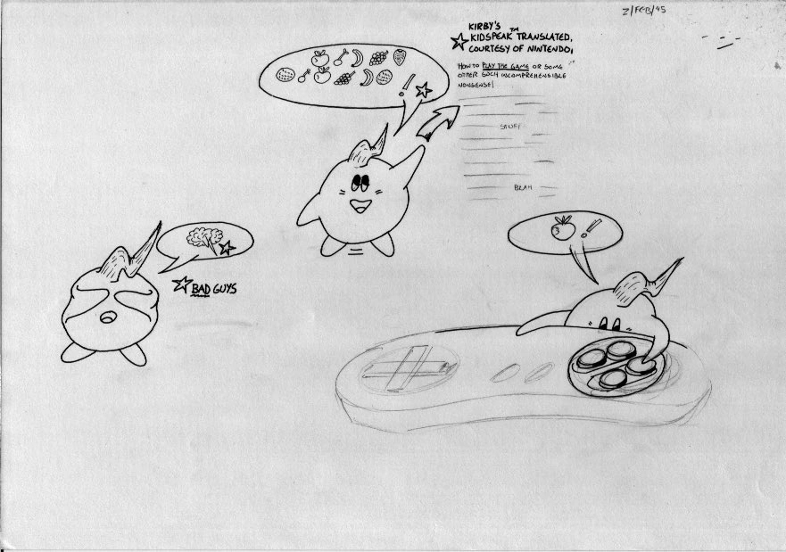
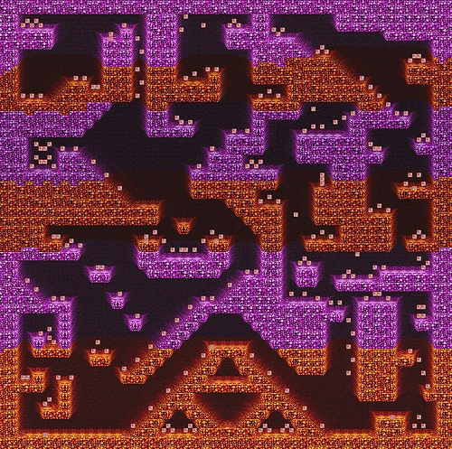

OVERVIEW
Kid Kirby was a side-scrolling platform game developed by DMA Design for the SNES.
Unlike previous Kirby titles, the game focused on a younger version of Kirby and introduced gameplay built around mouse controls, a rare concept for Nintendo games during the mid-1990s.
Despite being publicly announced, the project was quietly cancelled before release.
Many cancelled games of kirby.

Boney cutscene
STORY
The game followed a younger version of Kirby during his early adventures across Dream Land.
Players would guide Kirby through colorful fantasy environments filled with enemies, obstacles, and floating platforms while helping him progress through different stages and challenges.
Although very little story material survived after cancellation, early footage and promotional artwork suggested a more energetic and playful tone compared to previous Kirby titles.
GAMEPLAY
Kid Kirby was designed as a 2D platform game controlled primarily with the SNES mouse accessory. Instead of traditional movement systems, players interacted with Kirby by dragging, launching, and guiding him across levels using mouse inputs.
Gameplay included:
- platforming
- puzzle-solving
- object interaction
- enemy encounters
- momentum-based movement
The game also featured hand-drawn animation and expressive character movements, giving it a distinct visual style compared to other Kirby games released at the time.
A few screen of the game.

Marukatsu shonen
DEVELOPMENT
Development began during the final years of the Super Nintendo era as Nintendo experimented with alternative hardware accessories and control methods.
The project was developed by DMA Design, the studio that would later become famous for creating Grand Theft Auto.
Only a small amount of footage, magazine previews, and promotional material survived after the cancellation of the game.
CANCELLATION & LEGACY
Kid Kirby was cancelled before launch.
Reports suggest the project struggled due to the declining popularity of the SNES mouse accessory and the approaching end of the SNES lifecycle.
Nintendo never officially revisited the concept after cancellation.
Although less famous than other cancelled Nintendo projects, Kid Kirby became a cult curiosity among preservation communities and retro gaming fans.
Because so little material exists, the game remains one of Nintendo’s most obscure unreleased titles.

Mother 3 booklet.